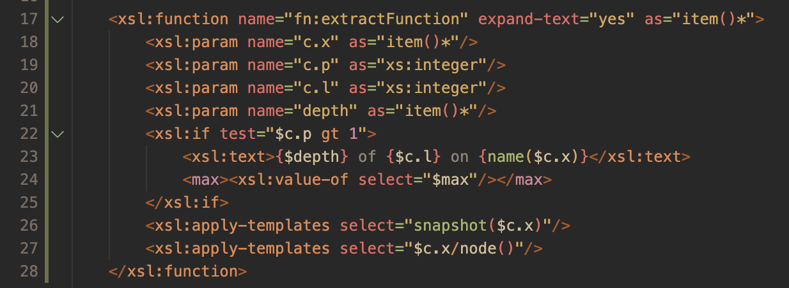

Refactoring and Reviewing XSLT
Stylesheets outlive the people who wrote them. Names that made sense become misleading, a template grows until nobody wants to touch it, and a library of functions is copied from one project to the next. Changing a stylesheet safely, and understanding one you did not write, are two sides of the same skill.

xsl:function, with the
context it used passed in as parameters.Refactoring
Refactoring changes how code is organized without changing what it does. The XSLT/XPath extension has refactorings that understand XSLT - not just text:
- Rename a variable, parameter, function, template or other symbol, with every reference updated - across the modules a stylesheet imports and includes.
- Extract selected XSLT or XPath to a new
xsl:functionorxsl:template, with the variables and context it needs passed as parameters, or extract anxsl:variablefrom an XPath expression. - Convert a library to an XSLT package, so that it exposes a public interface.
- Wrap code with an instruction, such as
xsl:if, in one step.
Refactoring is safest with tests behind it: run your XSpec tests before and after, and the checking described in Editing XSLT will flag a reference that no longer resolves.
Reviewing and understanding a stylesheet
To review a stylesheet, you first need to find your way round it. Go to Definition and Find All References answer "where is this declared?" and "who uses it?"; a call hierarchy shows what calls a function or template; the outline and Go to Symbol list what a module contains. The XSLT Imports view shows the tree of modules, imports, includes and packages for the top-level stylesheet, with the module you are in marked.

The checking the extension does is a reviewer's first pass: unused variables and parameters, calls with the wrong arguments, wrong types, references that don't resolve.
Leaving notes for the next reader
XSLT 4.0 adds xsl:note, for documentation inside a stylesheet. The extension shows a note in
hover and signature help, with Markdown and tags such as @param that are checked against the
code, so the documentation a reviewer needs is at hand where the code is used.
The details are in the user guide: refactoring, code navigation, XSLT packages and code documentation.
Common questions
How do I rename an XSLT template or function safely?
Use Rename Symbol. The extension updates every reference, including those in the modules the stylesheet imports and includes.
How do I extract a function from XSLT code?
Select the XSLT or XPath code and run the Extract refactoring. The extension creates an
xsl:function or xsl:template with the variables and context it uses as
parameters.
How do I understand a large XSLT stylesheet?
Use Go to Definition and Find All References, the call hierarchy, the outline, and the XSLT Imports view, which shows how a stylesheet's modules fit together.
Get the extension. Install XSLT/XPath for Visual Studio Code from the Marketplace.